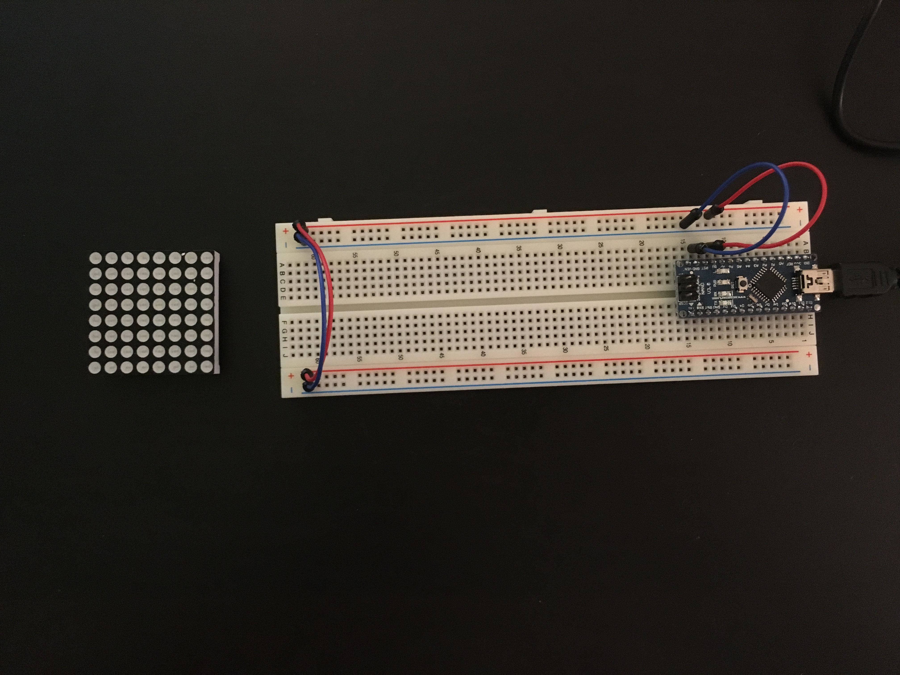
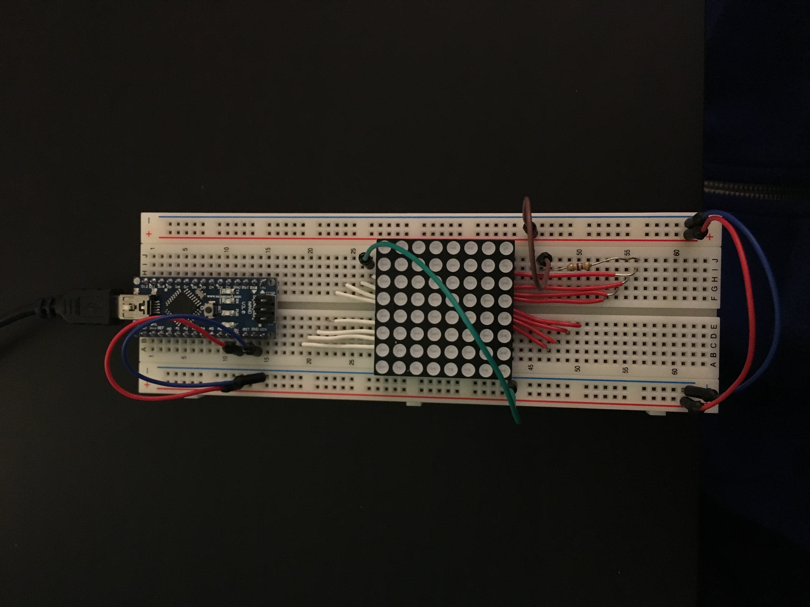
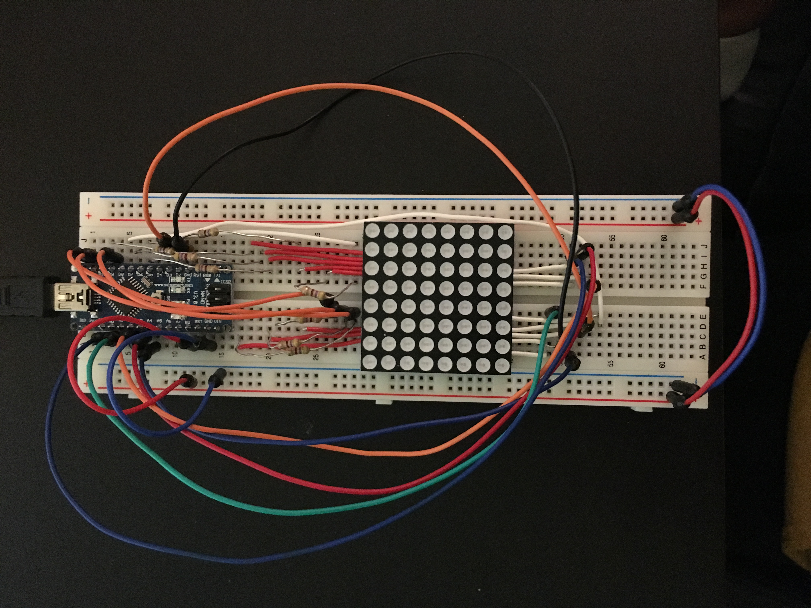
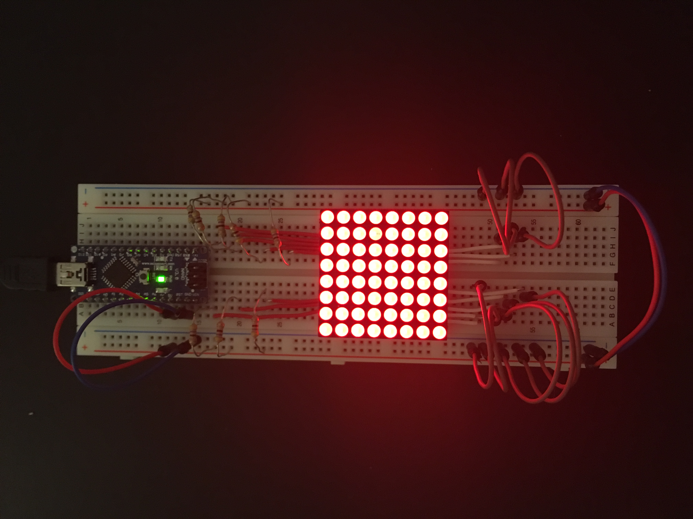
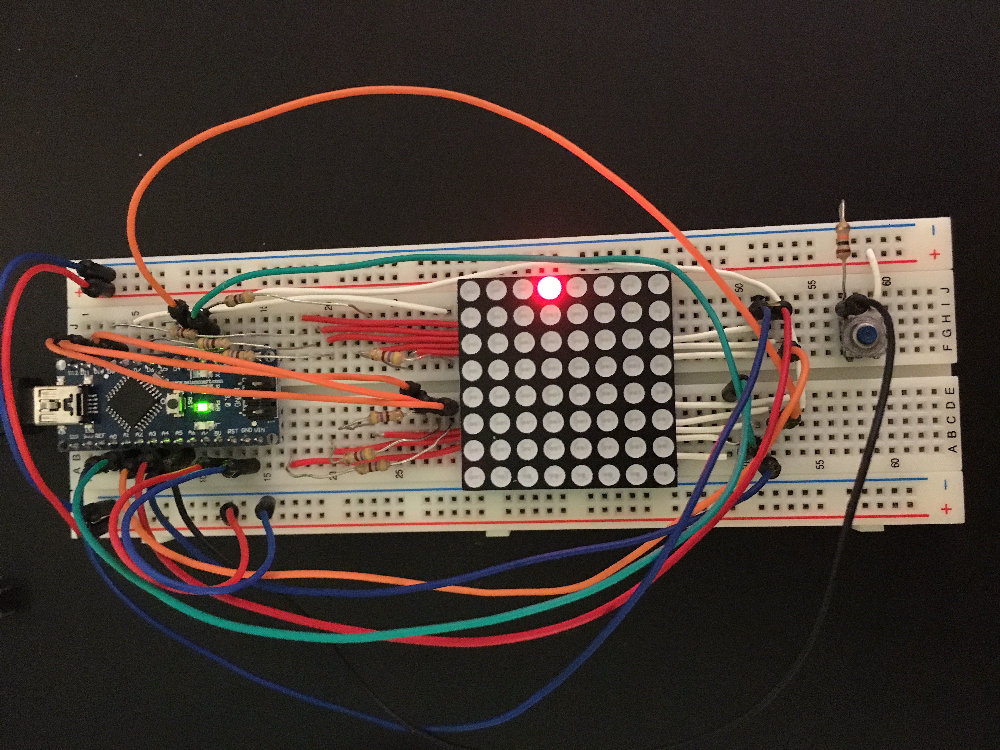

Jumper Game
Background
Jumper is a game that was conceived in the first project for HCI class 05-833: Gadgets, Sensors, and Activity Recognition taught by Prof. Scott Hudson. It is an extremely simplified version of the popular phone app Doodle Jump.
This game is displayed on an 8x8 LED matrix, where the user controls a pixel (the Jumper) on the screen with two switch buttons. The Jumper is in a constant bouncing motion, so the user only needs to move the Jumper left or right by pressing either the left or right switch. The goal of the game is to advance the pixel using ledges that will appear on the screen and to stay alive as long as possible. The game ends when the player misses a ledge, and the Jumper will “fall” all the way back to the first ledge, immediately starting a new game.
The final score is the total height the Jumper has achieved.
Technologies
This game was developed using the Arduino Nano on the Arduino Web IDE.
Progress Pictures

Before wiring the breadboard for the LED matrix.

Wiring the breadboard requires some thoughtful planning. As shown here and below, I decided to rewire my breadboard so it would be easier to attach my wires to the different pins.

The final wiring of the breadboard.

Verifying that all the LEDs are functional.

Starting to code the game!
Final Product
Reflection
As someone who had no hardware experience prior to this class, working on this project was both fun and frustrating at the same time. It was fun because I had never worked with both software and hardware, but frustrating because the code that I wrote would oftentimes not translate the way I wanted it to on the matrix. I ran into several problems with displaying the shapes that I wanted and appropriately implementing the scrolling ledges. It was only through the scouring of many, many forums that I managed to piece together many tidbits of advice and wisdom that I was able to produce this completed game.
One cool library I was able to utilize was the FrequencyTimer2 library, which facilitates interrupt routines to the loop() method the Arduino runs. This allowed me to fluidly and constantly refresh and redraw the screen to render the bouncing Jumper and moving ledges.
All in all, I am very happy with the way this game turned out. In the future, I would like to add sound effects and additional “power-ups” that can be found in the actual Doodle Jump game.